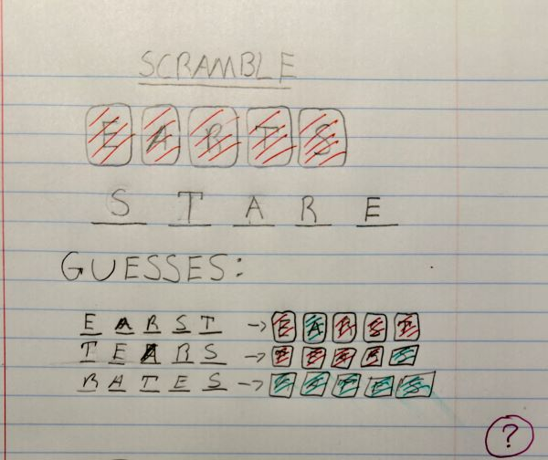
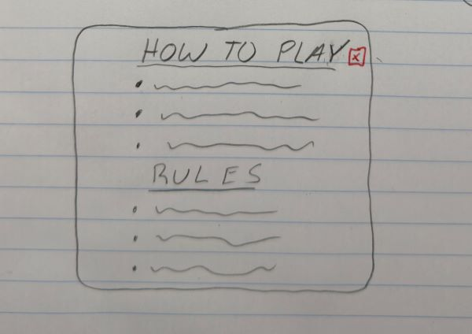

Story
There is not much story to give for the game. As it is a puzzle game meant to be a brain teazer.
Scramble is a game much like wordle from the NY times. The goal of the game is uncover a 5 letter word. However, unlike Wordle, Scramble will provide the letters for the user but jumble them around. Creating a mess of letters for the user to sort through.
The genres of Scramble will be puzzle. This is because the game is based in a category of games where the player must solve various puzzles and acomplish certain challenges.
The platforms for this game will be both mobile and desktop browsers.
There is not much story to give for the game. As it is a puzzle game meant to be a brain teazer.
The Aesthetics for Scramble will be minimalistic and utilize intuitive colors to convey information to the user. Things like correct letter placement would be green, incorect would remain uncolored, etc.
Players will be presented with a simple explanation of the rules and game controls on entering the page. When they close the popup, there will be nothing but the game field and word input. If players would like to review the rules and info, they can click the help icon and redisplay the popup window. The game field will contain a line of letter tiles for the player to work with. The player will be able to type in a word based on those letters. If the word is correct, the letter will turn green and move to its correct spot, swapping places with the letter currently there. I would like to make the game based on click and drag tiles to solve a jumbled word. Clicking solve will check the word and letter locations Letter tiles would also be more dynamic and react to the dragging of another letter by moving to the right or left to acomodate. Letters would also snap to locations The core loop is typing in a word, checking validity and accuracy, then guessing again until the word is sorted out.
Mockup images:
 